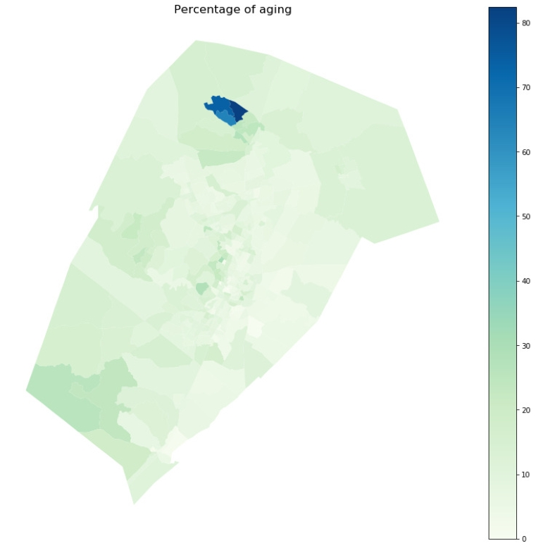
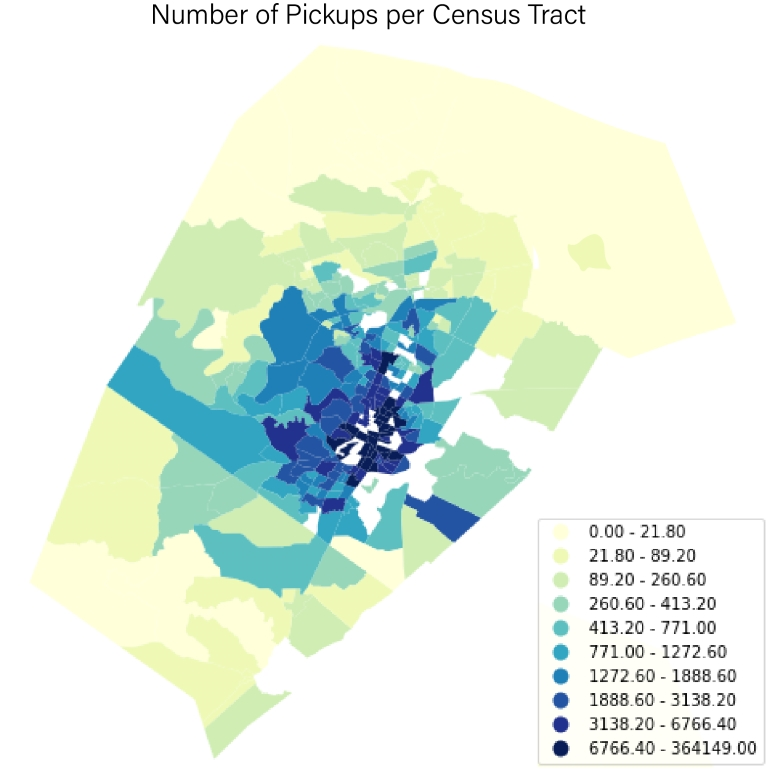

Spatial Pattern of Social-economic Factors
We compare the spatial distribution of demographic groups in Austin and the ride hailing trips aggregated to the census tract side by side as shown on our website. It shows that the ride hailing’s role among older adults are twofold. On the one hand, the use is unequally distributed in space. The suburbs of the north and south have very few ride hailing trips, while most of trips concentrate in the city center. On the other hand, the ride hailing use is relatively high in the eastern section of the city, where the share of older adults with disability, Hispanics and the share of households without private vehicles are all high.